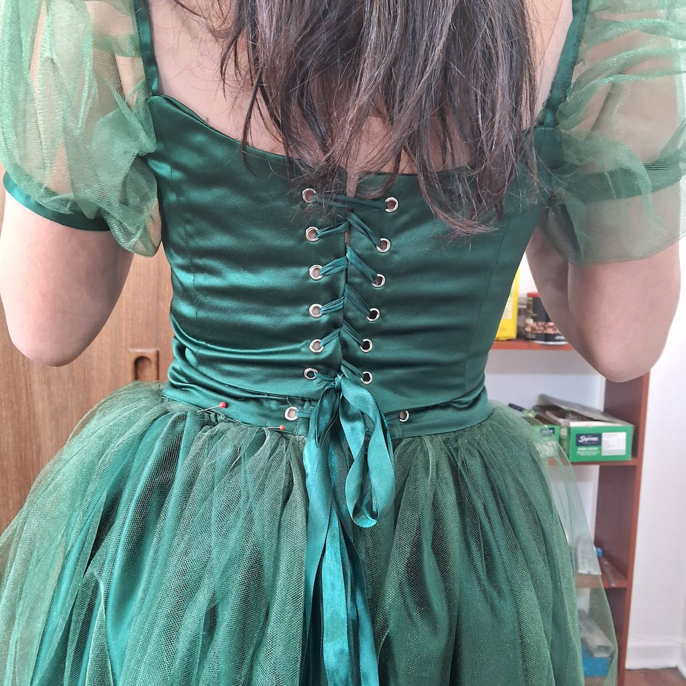

Presencial
Clases personalizadas grupales
Aprende a dar vida a tus ideas. En este taller 100% personalizado, volvemos realidad tus proyectos. Si no tienes experiencia no pasa nada, partimos de cero y si la tienes, pues bienvenida, ¡podemos hacer cosas increíbles! Clases grupales en mi taller, máximo 3 cupos.